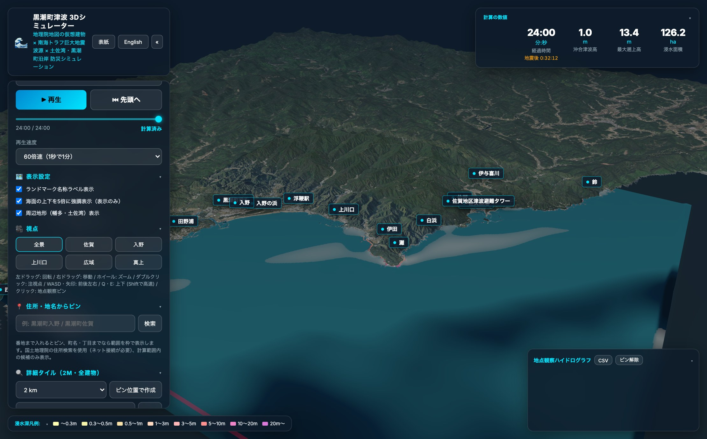
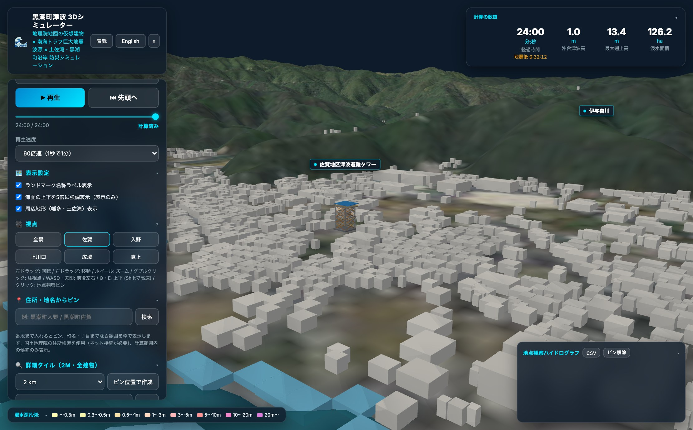
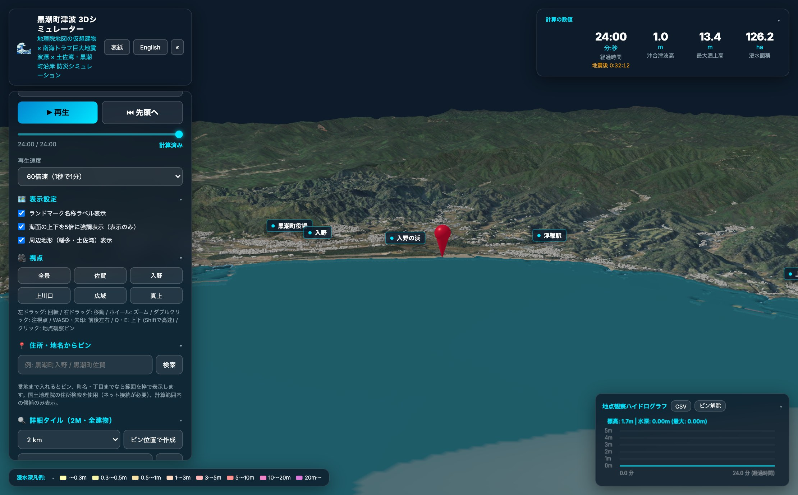
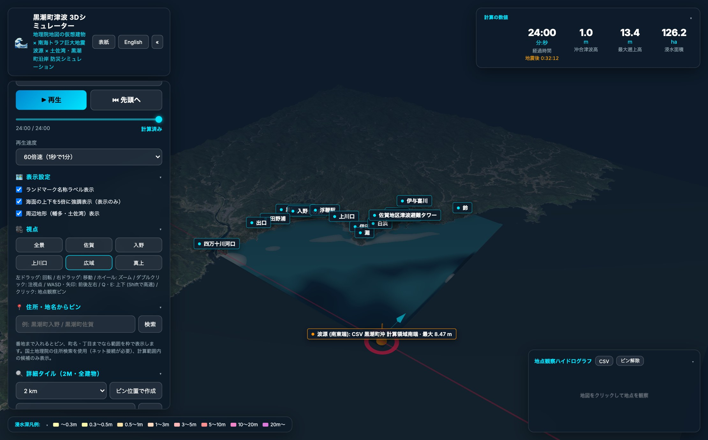
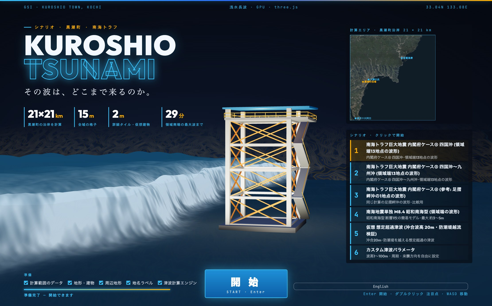

南海トラフ巨大地震で日本最大級の津波高が想定される高知県黒潮町。田野浦・入野〜上川口〜佐賀〜鈴の沿岸 21×21km を 15m 格子（196万セル）で再現し、国土地理院の建築物外周線から生成した 20,256棟の仮想3D建物と佐賀地区津波避難タワーを配置。広域シミュレーター nankai_trough で黒潮町沖を15秒メッシュに細かくして計算した領域端13地点の波形を入力し、浅水長波モデルで津波の遡上を可視化する macOS デスクトップアプリです。
土佐湾から入野の浜・上川口・白浜・佐賀漁港へ押し寄せる津波を、国土地理院の標高・建築物外周線・空中写真と海底水深データ（japan_sea.tif）で立体化。さらに気になる地区には 1〜3km 四方の 2m 詳細タイルを作成し、GPU で建物間の流れを計算できます。

黒潮町沿岸 21×21km · 15m格子黒潮町には PLATEAU の 3D 都市モデルがないため、国土地理院ベクトルタイル（experimental_bvmap z16、基盤地図情報の建築物外周線）から 20,256棟の仮想3D建物を構築しています。底面積は実際の外周線から取り、高さは建物の種類からの仮定値（普通建物 7m / 堅ろう建物 13m / 高層建物 35m）を与えています。

佐賀地区津波避難タワー (全高25m)黒潮町佐賀713-1 にある「佐賀地区津波避難タワー」を 3D モデルで配置しています。位置は国土地理院の指定緊急避難場所データ（津波）に基づき、高さは『広報くろしお』（2017年7月号）の記載から全体 25m・避難フロア地上 22m（面積 233m²・収容人数 230人）として再現しています。

住所検索 · 町丁境界 · 2m詳細タイル地図上のクリックや国土地理院の住所検索（例:「黒潮町入野」「黒潮町佐賀」）で観察地点を指定できます。番地まで入れればピンを置き、町名・字までなら e-Stat（2020年国勢調査 小地域境界）の町丁範囲を赤枠で囲んで、その範囲内の陸地の最大水深をハイドログラフに表示します。

kuroshio.tif (1秒角) 広域背景計算範囲（21×21km）の周囲には、1秒角 DEM（kuroshio.tif）と空中写真から構築した 58.2×64.7km の周辺地形を配置。南西の四万十川河口・田野浦から、入野の浜、上川口、白浜、佐賀漁港、北東の鈴・中土佐町方面まで、リアスと砂浜が続く土佐湾の地形的なつながりを自由なカメラ視点で確認できます。
広域津波シミュレーター nankai_trough のソルバーをヘッドレスで実行し、黒潮町沖（132.5〜133.7°E、32.4〜33.35°N）だけ 15秒メッシュ（約400m、japan_sea.tif）の入れ子格子にして計算。本領域の南端・東端に沿って3kmごとに採った 13地点の波形を、採った場所の境界から換算なしで直接入力しています。

タイトル画面（避難タワーと領域マップ）高知県が想定に用いる内閣府ケースのうち、黒潮町沖で最も高くなる「ケース④ 四国沖（大すべり域）」を既定にしています（ケース⑤とほぼ同規模）。第1波の立ち上がり（地震後 約9〜16分）を途中で切らないよう、全13地点のうち最初に「全地点の最高水位の5%」に達する時刻の3分前（ケース④では地震後 8.2分）から計算を開始します。
| シナリオ | 足摺岬沖 | 南端中央 | 南端西寄り | 東端 | 最大の時刻 |
|---|---|---|---|---|---|
| 内閣府ケース④ 四国沖 (既定) | 6.69 m | 8.47 m | 12.71 m | 11.95 m | 地震後 約25〜32分 |
| 内閣府ケース⑤ 四国沖〜九州沖 | 6.86 m | 8.59 m | 12.78 m | 10.72 m | 地震後 約25〜32分 |
| 南海地震単独 M8.4 (昭和南海型) | 1.57 m | 3.31 m | 4.64 m | 4.78 m | — |
内閣府ケース④・⑤の領域端13地点入力から、昭和南海型、想定超過の越流検証、nankai_trough 出力CSVのドラッグ＆ドロップまで対応しています。
内閣府(2012)ケース④「四国沖に大すべり域」を黒潮町沖15秒メッシュで計算し、領域の南端・東端に沿って約3kmごとに取り出した13地点の波形を各境界から直接入力。倍率は掛けていません（×1.0）。
「四国沖〜九州沖に大すべり域」のケース⑤（領域の西側でやや高い）と、比較用として観測点「足摺岬沖」（133.00°E, 32.65°N）の1地点の波形をグリーンの法則で換算して全体から入力するケース④を収録。
1946年昭和南海地震型の単一断層簡易モデル（領域端13地点）と、領域端から沖合波高20mの正弦波を入射させて防潮堤を越流し入野・佐賀の低地へ広がる過程を検証する仮想ケース。
nankai_trough が出力した任意地点のCSVをドラッグ＆ドロップで読み込み（水深に応じたグリーンの法則の浅水補正と倍率指定に対応）。カスタムモードでは波高・周期・来襲方向を自在に変更できます。
本アプリの計算条件と公的な浸水想定との違いを明記しています。避難の判断には使わず、黒潮町・高知県の公的なハザードマップを必ず確認してください。
境界の波形を約400m（15秒）メッシュの入れ子格子で採っているため、湾奥や岬での局所的な増幅（内閣府想定は最小10m格子・最大津波高 34.4m）は境界波形に入っていません。また、倍率は当てはめていません（×1.0）。
断層モデルでは領域内の海も陸も沈降します（海で最大約0.7m）。陸を動かさずに海だけを沈めると陸に対する水位を低く見積もるため、海も陸も動かさない条件にしています。実際の沿岸沈降（約1m前後）の分、浸水面積や到達時刻（公的想定の最短約8分）は過小・遅めになります。
地理院ベクトルタイルの建築物外周線には高さ属性がないため、建物の種類から仮定しています（この範囲はほぼすべて普通建物 7m）。また、海岸・漁港の防潮堤 T.P.+6.0m も仮定値です（スライダーで変更可能）。避難タワーの鉄骨形状も一般的な表現であり実物構造ではありません。
Tauri v2 で構築された macOS ネイティブアプリ（v1.0.0）。15m格子の全域計算・プリセット波源の再生はオフラインで動作し、住所検索や 2m 詳細タイルの作成（ネット接続時）、CSV・MP4 動画のダウンロードフォルダへの保存に対応しています。